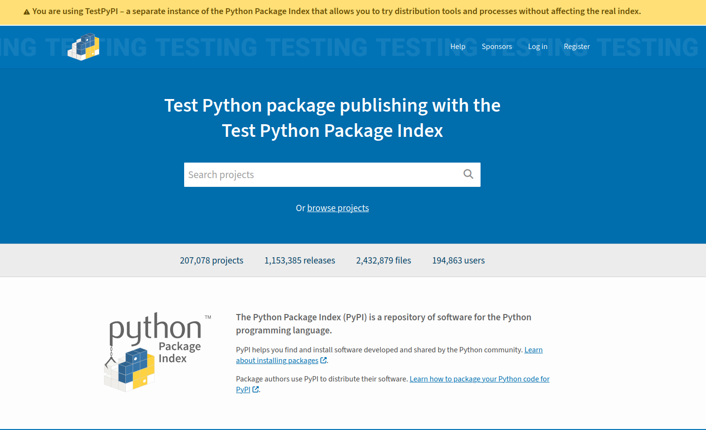
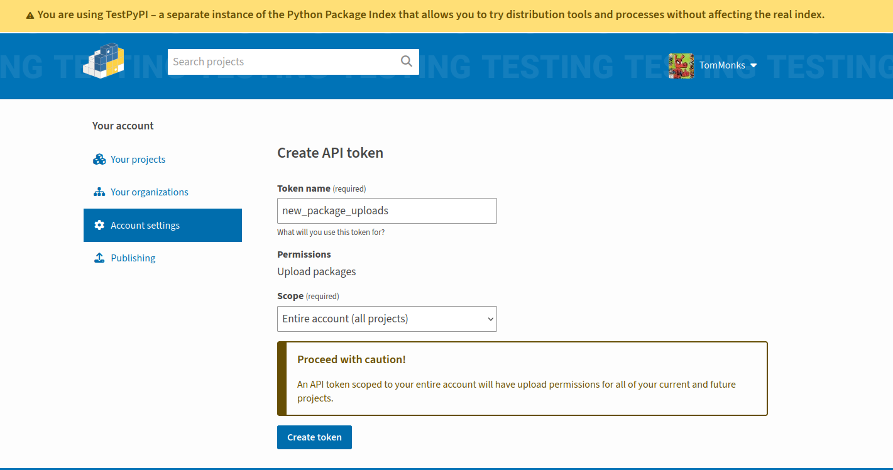
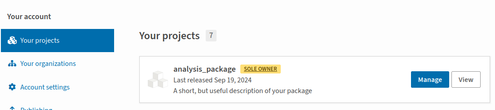

Publish a package on PyPI#
The first thing to say is that there is a PyPI test site! It is called TestPyPI and is incredibly helpful and I recommend you make use of it while learning instead of the main PyPI site. I found that I made several mistakes the first time I attempted publication (and still do with new packages!). The great thing about TestPyPI is that once your package is published you can install it, just like you would if it were on the production PyPI site.
pyOpenSci.org: An (excellent) alternative guide to PyPI
While I was updating version 3 of this book I came across an excellent easy to follow guide to python package publishing on PyPI available on pyopensci.org. Its another good source of information if you want a different perspective.
IMPORTANT: Use a unique package name#
Before you proceed any further I recommend visiting PyPI and TestPyPI searching for your package name. You might find a package with an identical name. If an identically named package exists then you need to rename your package, before attempting any of the steps outlined in this section.
In the past I have also regretted using a similar name to existing packages. Don’t make the same mistakes as me! Keep things simple for yourself: make your package name distinctive.
If you do rename your package then make sure you must update the following:
The
pyproject.tomlmeta-dataThe package directory
The GitHub repository
Setting up TestPyPI#
Get a TestPyPI account#
You need to go to https://test.pypi.org and create an account. You should be greeted by a webpage similar to the below. Note that the banner that is making clear you are on the test site. As part of the account creation process you will be required to setup two factor authentication.

API Tokens#
Rather than use your username and password to upload to TestPyPI you need to use an API token. Tokens come in two levels of scope:
account wide: an API token scoped to your entire account will have upload permissions for all of your current and future projects.
project specific: this is self explanatory an API token that allows uploads of a specific package.
There’s a catch to this framework! You can only create a project specific token for an existing project. This means that for a new package you need to use an account wide token. Once the package is uploaded you can then create the project specific token.
To create a token head to account settings and select Create API token. You should be presented with a page similar to the below. I’ve selected account wide token and chosen the name “new_package_uploads” so that its use is clear. Click on Create Token

You will then be shown the generated token. IMPORTANT - you need to save this token to a very safe place. You won’t be shown it again and you don’t want to share it with others as it can access all projects in your account. The token will take the following form: pypi-[random string]
Using hatch to publish to and TestPyPI#
To publish on PyPI you need to upload a source tarball and wheel distribution. If you need a reminder of what a wheel is head over to the introduction to installable packages. To generate these files issue the following command in the top level of repo directory:
hatch build
This will create a new directory dist/ containing the source and wheel files.
├── dist
│ ├── analysis_package-0.1.0-py3-none-any.whl
│ └── analysis_package-0.1.0.tar.gz
You are not ready to upload! Have your account wide API token to hand. To publish to TestPyPI we simply run
hatch publish -r test
You will be prompted for a username enter
__token__You will then be prompted for the API token. Paste in your API token (this won’t be displayed).
The package will then be uploaded to TestPyPI and hatch will inform you if this has been successful. If it has you will be prompted with a URL to the TestPyPI page for your new package. For example, https://test.pypi.org/project/analysis_package/0.1.0/. Go take a look at your page!
Install your package from TestPyPI#
On your web page will be a special TestPyPI link to install your package. This looks a bit different from production PyPI, but has the same result. For example, for analysis_package we install it as follows:
# let's intall into the hds_code env
conda activate hds_code
# pip install analysis_package from TestPyPI
pip install -i https://test.pypi.org/simple/analysis_package==0.1.0
Recommended: create a package specific API token.#
Now that you have created your package, I recommend logging back into your TestPyPI account and creating a package specific API token. It is more secure to work with API tokens that are specific to packages (especially if working in a team or group when developing the work). This avoids accidental uploads to different packages. To do this select projects, your project (e.g. analysis_package) and then settings.

Publish on PyPI production#
First I just want to say that you should not publish on the main production PyPI platform unless it is needed. Use PyPI when necessary to help your own research, work or colleagues, but not for testing purposes: use TestPyPI instead. You will need a separate account for PyPI.. If you intend to publish to PyPI then you need to follow all of the same steps we used for setting up TestPyPI.
When you are ready to upload there is a different hatch command to publish:
hatch publish